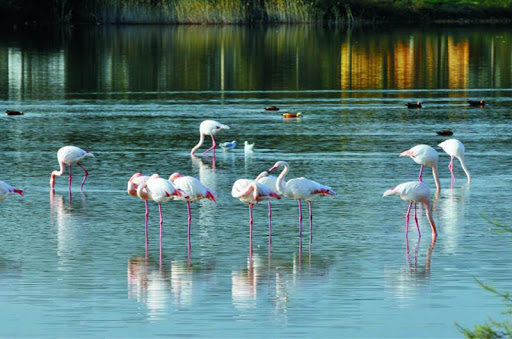

Türkiye Cumhuriyeti'nin Karadeniz Bölgesi'nde bulunan bir ildir. Merkezi Amasya'dır. 2010 TUIK verilerine göre merkez ilçe ile birlikte 7 ilçe, bunlara bağlı 20 belde ve 349 köyü vardır.
SAYISAL BİLGİLER
İlçeleri Merkez ilçesi: Yüzölçümü 1730 km², nüfusu 158,714 kişi olup, 99,900’ü il merkezinde, 58.814’ü ise belde ve köylerde yaşamaktadır. Aydınca, Doğantepe, Ezinepazar, Uygur, Yassıçal, Yeşil Yenice ve Ziyaret olmak üzere 7 beldesi ve 100 köyü bulunmaktadır.
Taşova İlçesi: Yüzölçümü 1.041 km², nüfusu 35.186 kişi olup,9,283'ü ilçe merkezinde 25,903’sı belde ve köylerde yaşamaktadır...
Amasya nüfusu 2020 yılına göre 335.494'dir.
AMASYA
Şehzadeler Şehri veya Şehzadeler Diyarı olarak anılan Amasya, Osmanlı Dönemi’ndeki en önemli
şehirlerden biriydi. Zira tahtın veliahttı olan şehzadelerin bir kısmı Amasya’da yetiştirilmişti.
Geçmişi bundan daha da eskiye dayanan Amasya, MÖ. 60 – MS. 19. yıllarda Amasya’da doğduğu
tahmin edilen ve Coğrafya ilminin mucidi olarak tanınan Strabon’un yazdığı ünlü coğrafya
kitabında Amasseia olarak karşımıza çıkmaktadır.
O gün bugündür varlığını sürdüren şehir, Türkiye’nin Orta Karadeniz bölgesinde, Anadolu’nun
iç kesimlerini Samsun Limanı’na bağlayan yol üzerinde konumlanmaktadır. Şehrin
kuzeyinde Samsun, güneyinde Yozgat, doğusunda Tokat, batısında ise Çorum yer almaktadır.
Tarihi zenginliğinin yanı sıra doğal güzellikleriyle de öne plana çıkan Amasya’da gezip görülmesi
gereken pek çok yer mevcuttur. Ayrıca Amasya’nın meşhur elması, tüm ülkede oldukça ünlüdür.
Yalıboyu Evleri, Amasya’nın simgelerinden biri olarak kabul ediliyor. Şehir merkezinde yer alan
Yeşilırmak kenarındaki tarihi evler, dik bir dağın bitiminde yer aldığı için oldukça estetik ve ilgi
çekici bir manzara ortaya çıkarıyor.
Genellikle iki veya üç katlı olan evler, ahşap ve beton malzeme kullanılarak inşa edilmiş.
Dönem dönem restore sürecinden geçen tarihi konakların olduğu alanı görmek
isterseniz, Yeşilırmak kenarına gelmeniz yeterli.
Adres: Bahçeleriçi, Büyük Ağa Cd. No: 1, 05200 Amasya Merkez/Amasya
Amasya’da gezilecek yerler listemizde şimdi sıra doğal güzelliklerde! Şehrin doğa harikalarından
biri olan ünlü Borabay Gölü’yle başlıyoruz. Aynalı Göl adıyla da bilinen doğal park, Amasya’nın
Taşova ilçesinde yer alıyor. Şehir merkezine 60 km mesafede bulunan göle ulaşabilmeniz için,
göle 3 km uzaklıktaki Borabay Köyü’ne gelmeniz gerekiyor. Deniz seviyesinden 1050 metre
yükseklikte yer alan doğa harikası gölün, yemyeşil manzarasıyla ilk gördüğünüz anda sizi
büyüleyeceğine eminiz.
Amasya’nın simgelerinden biri olan Bayezid Külliyesi, Yeşilırmak’ın kenarında yer alan oldukça
estetik bir tarihi eser. 1481 yılında II. Bayezid’in tahta çıkmasıyla yapımına başlanan ve 1486’da
biten tarihi yapı, külliye ve yanında yer alan cami ile oldukça dikkat çekiyor. Nehrin kenarında yer
alan bu büyük külliye, şehrin önemli tarihi eserlerinden biri. Geniş ve büyük avlusu, el işlemeli taç
kapısı ve mimari işçiliğiyle dikkat çeken yapıyı, Amasya geziniz sırasında ziyaret edebilirsiniz.
Adres: Hacı İlyas, Sultan II. Bayezit Cami No: 47, 05100 Merkez/Amasya
Giriş ücretsiz
Amasya’nın şehir merkezine tepeden bakan bu görkemli yapı, şehrin en önemli tarihi ve mimari
simgelerinden biri olan Amasya Kalesi. Şehrim merkezinden akan Yeşilırmak’tan 300 metre
yükseklikte yer alan Harşena Dağı’nın üzerindeki kalenin üzerinde herhangi bir kitabe yer almadığı
için ne zaman ve kim tarafından yaptırıldığı net olarak bilinmiyor.
Kale içerisinde Osmanlı döneminden kalan hamam ve pek çok mezar yer alıyor. Şehir merkezinde
yer alan dağın eteklerinden kaleye kolayca çıkabileceğiniz bir yol bulunuyor.
Adres: 05000 Yuvacık, Amasya Merkez/Amasya
Çalışma saatleri: 09.00 – 16.45
*Her gün açık
Giriş ücreti: 5 TL

YEDİ KUĞULAR KUŞ CENNETİ
Amasya’ya geldiğinizde mutlaka uğramanız gereken gezi noktalarından bir diğeri de, şehrin en
güzel noktalarından biri olan Yedi Kuğular Kuş Cenneti… Amasya il merkezine 30 km mesafede
yer alan Suluova’nın 9 kilometre ilerisindeki tabiat parkı, 35’e yakın kuş türüne ev sahipliği yapıyor.
1989 yılından beri sit alanı olarak koruma altına alınan park, özel düzenlemeyle mesire alanına
çevrilmiş.
Yedi Kuğular Kuş Cenneti’nde bulunan parkta yemyeşil ağaçlarının altında yer alan piknik
masalarında sevdiklerinizle harika bir gün geçirebilir, doğanın tadını çıkarabilirsiniz. Doğal parka
geldiğiniz kuşları görmezseniz üzülmeyin, kuşlar göç zamanlarında hareket ettiği için başka
yerlerde doğanın keyfini çıkarabiliyorlar.
Adres: Cürlü, 05500 Suluova/Amasya
Giriş ücretsiz
FERHAT İLE ŞİRİN AŞIKLAR MÜZESİ
Şehrin önemli müzelerinden bir diğeri olan Ferhat ile Şirin Aşıklar Müzesi yer alıyor. Amasya,
efsanevi aşıklar Ferhat ile Şirin’in yaşadığı yer olarak biliniyor. Şirin’e olan aşkı uğruna dağları
delerek, suyu getiren Ferhat’ın izleri ise hala “Ferhat Su Kanalı” olarak bu şehirde yaşıyor.
Hüsrev-ü Şirin ya da Ferhat ile Şirin adlarıyla İranlı ve Türk divan şairlerince mesnevi şeklinde
yazılmış bu halk öyküsü Türkiye, Azerbaycan, İran, Orta Asya ve Balkanlar’da varyantlarıyla
yüzyıllardır dilden dile dolaşıyor. Siz de Ferhat ile Şirin’in masal haline gelen bu öyküsünü yerinde
görmek istiyorsanız, Amasya merkeze gelmeden önce, Ferhat Su Kanalı bölgesine gelmeniz
yeterli.
Adres: Helvacı, 05100 Amasya Merkez/Amasya
Çalışma saatleri: 09.00 – 19.00
*Pazartesi günleri kapalı
Giriş ücreti: Yetişkin 5 TL – Öğrenci 2 TL *12 Yaş ve altı ücretsiz